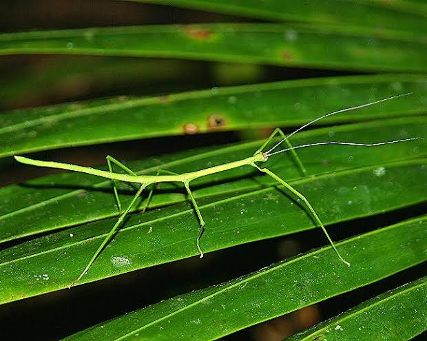

Author: Griffin Urban
Email: griffinu@iastate.edu
Date: 8/28/2024
This is an h1 header
This is an h2 header
This is an h3 header
This is an h4 header
This is an h5 header
This is an h6 header
This is an un-ordered list
- element 1
- element 2
- element 3
This is an ordered list
- element 1
- element 2
- element 3
This is a paragraph element
This is a second paragraph
scroll down for more cool stuff
My favorite bugs
in no particular order
To learn more about any bug, feel free to click on each image to go to its wikipedia page!
Praying Mantis

Praying Mantis have excellent hunting, climbing, and stalking ability. They ensnare prey in their claws.
Their large eyes allow for precise vision in with a large field of view.
Stick Bug

The Stick bug is a master of disguise, able to remain still for hours on end, looking exactly like a stick.
This makes the stick bug almost impossible to find by predators.
Firefly

The firefly, also known as the lightning bug, creates a glowing light from its thorax.
It is assumed the firefly uses its light as a mating call, to attract a partner.
Conclusion
Thank you for reading all about my favorite bugs, maybe you can add some of these to your 'favorite bugs' list!